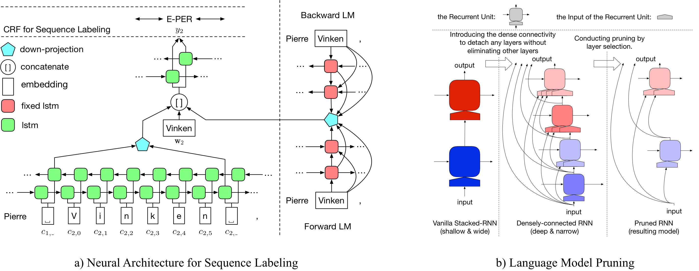

LD-Net
LD-Net provides sequence labeling models featuring:
- Efficiency: constructing efficient contextualized representations without retraining LMs.
- Portability: well-organized, easy-to-modify and well-documented.
- 92.08 test F1 on the CoNLL03 NER task.
- 160K words/sec decoding speed (6X speedup compared to its original model).
Motivation
Language model has demonstrated its effectiveness on contextualized word representation and pushes the state-of-the-art performances on various tasks. Despite performance improvements, language models also makes the resulting model too slow for real-world applications. In this paper, we aim to conduct language model pruning for efficient contextualized representation, while maintaining the plug-in-and-play manner.
Details about LD-Net can be accessed at: PDF

Benchmarks
NER
When models are only trained on the CoNLL 2003 English NER dataset, the results are summarized as below.| Model for CoNLL03 | #FLOPs | Mean(F1) | Std(F1) |
|---|---|---|---|
| Vanilla NER w.o. LM | 3 M | 90.78 | 0.24 |
| LD-Net (w.o. pruning) | 51 M | 91.86 | 0.15 |
| LD-Net (origin, picked based on dev f1) | 51 M | 91.95 | |
| LD-Net (pruned) | 5 M | 91.84 | 0.14 |
POS
When models are only trained on the CoNLL 2000 English Chunking dataset, the results are summarized as below.| Model for CoNLL03 | #FLOPs | Mean(F1) | Std(F1) |
|---|---|---|---|
| Vanilla NER w.o. LM | 3 M | 94.42 | 0.08 |
| LD-Net (w.o. pruning) | 51 M | 96.01 | 0.07 |
| LD-Net (origin, picked based on dev f1) | 51 M | 96.13 | |
| LD-Net (pruned) | 10 M | 95.66 | 0.04 |
Bib Tex
Please cite the following paper if you find the codes and datasets useful.
@inproceedings{liu2018efficient,
title = "{Efficient Contextualized Representation: Language Model Pruning for Sequence Labeling}",
author = {Liu, Liyuan and Ren, Xiang and Shang, Jingbo and Peng, Jian and Han, Jiawei},
booktitle = {EMNLP},
year = 2018,
}